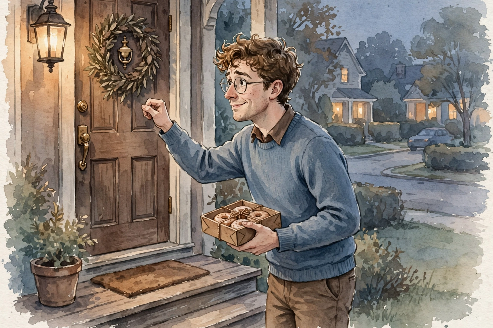

Huberman Lab · Episode Companion
How to Overcome Social Anxiety
Dr. Nick Epley, behavioral scientist at the University of Chicago, has spent fifteen years proving one thing: we are wildly, systematically wrong about how strangers will treat us. The cure for social fear is not rehearsal. It is real conversation, and the data says the world is kinder than you think.
Illustration. The experiment you can run today: talk to a stranger. AI-generated watercolor made for this page.
Watch. The official Huberman Lab episode video. Use the chapter menu above to move through this companion as you listen.
The Wisdom Index: every nugget in this companion
~00:01
Intro: The Small Conversations
Social anxiety is something we really can help people with.
Dr. Nick Epley · Episode ~00:01
Huberman introduces Dr. Nick Epley, behavioral scientist at the University of Chicago and a researcher of the science of social connection. This conversation is not about improving ties with friends, family, or coworkers. It is about the smaller everyday conversations with people you barely know, and their outsized impact on mental and physical health.
He is explicit about what this is not: small talk for small talk's sake. It is the deliberate practice of connecting once or several times a day, and the science of why that changes lives, including yours.
~00:02
The Treatment: Real Exposure
Epley opens with the clinical punchline. The strategy for social fear is very simple, and psychologists did it wrong for years. They had patients give pretend speeches in empty rooms. It doesn't work because it's still pretending.
It has to be real.
The protocol: send people into the world to do the feared thing for real. Afraid of talking to strangers? Go ask strangers for help. The exposure works not by dulling the anxiety but by changing the belief underneath it. With social anxiety, Epley says, the belief about other people is usually wildly misplaced, and correcting it dissolves the fear.
Nugget 1 · Treatment
Real, not pretend
What happened. Simulated exposure fails because the brain knows it is pretend. Real-world exposure to strangers corrects the misplaced belief driving the anxiety.
Why it matters. Rehearsal comforts the therapist, not the patient. Only the real encounter updates the belief.
The principle. Practice in the arena, not the mirror. The fear lives out there.
Nugget 2 · Mechanism
Change the belief, not the feeling
What happened. Exposure eases social anxiety by revising beliefs about other people, not by numbing the feeling. The fear was a mistaken model of strangers.
Why it matters. Chasing calm treats the symptom. Updating the model removes the cause.
The principle. Ask what you believe about people, then test it. The feeling follows the belief.
~00:20
Wildly Miscalibrated
Fifteen years of research with collaborators, more than 30,000 people across 120 experiments, keeps landing on the same finding: we are overly pessimistic about how others will respond when we reach out. The miscalibration is systematic and large.
The mechanism is a double misunderstanding. You sit next to someone on a plane, assume they do not want to talk, and stay silent. They read your silence as disinterest. Both of you want the conversation. Neither starts it. Each mistakes the other's restraint for rejection.
Predicted vs actual warmth from strangers
Direction of effect across 120+ experiments. Schematic, not a single dataset.
Source: Huberman Lab, How to Overcome Social Anxiety, ~00:20. 30,000+ participants, 120+ experiments, per Epley.
Epley reframes the whole ethic. He now treats social connection as an opportunity, an invitation to connect, rather than an imposition. Manners, in his revised version, means attending to both your wellbeing and the stranger's, and the data says the stranger usually welcomes it.
Nugget 3 · Miscalibration
Others want to talk more than you think
What happened. Across 30,000 people and 120 experiments, people consistently underestimate how positively strangers respond to outreach.
Why it matters. The fear is not shyness. It is a forecasting error with a fifteen-year paper trail.
The principle. Distrust the forecast. Run the experiment.
Nugget 4 · Silence
Silence is not rejection
What happened. Two silent strangers each read the other's silence as disinterest, while both want to talk. The signal both receive is the opposite of the truth.
Why it matters. Most social fear is a misread signal, not a real refusal. The data is on the side of the first hello.
The principle. Treat connection as an invitation, not an imposition. Someone has to go first.
~00:45
100 Days of Rejection

Illustration. Day 3: ask a stranger for donuts, get kindness instead. AI-generated watercolor made for this page.
The most vivid exhibit is Jia Jiang's 100-day project. Expecting 100 straight rejections, he asked strangers for ludicrous favors to build thick skin. The results: accepted 51 times, rejected 48 times, with only about 7 of the 100 encounters carrying any negativity at all.
The famous entry is day three. He knocked on a stranger's door and asked for donuts. Fifteen minutes later she emerged, a little sheepish, with a box of donuts, worried she could have done better. The video's voiceover marvels that this is why humanity is worth saving.
100 days of asking strangers: the actual outcomes
Counts from Jia Jiang's project as described in the episode.
Source: Huberman Lab, How to Overcome Social Anxiety, ~00:45. Jia Jiang's 100-day rejection project, per Epley.
Nugget 5 · Evidence
Rejection is rarer than feared
What happened. One hundred days of absurd requests: 51 acceptances, 48 rejections, about 7 negative encounters. The feared 100 percent rejection rate was 7 percent.
Why it matters. The fear predicts universal hostility. Reality delivers occasional nos and frequent kindness.
The principle. Count your rejections for a month. The ledger will embarrass the fear.
~01:00
Twenty-Three Minutes With Gustavo
Illustration. Twenty-three minutes that beat a boring ride: a stranger opens his heart. AI-generated watercolor made for this page.
Epley tells his own story from the ride over: 23 minutes with a young driver named Gustavo, who opened his heart about his life. The alternative was a perfectly boring ride. The conversation made those 23 minutes profoundly better, a deeper human connection than seems possible in so short a time.
He used to have these talks on airplanes too, before the cabin arrangement made it awkward. The pattern holds everywhere: people assume others do not want meaningful conversation, when most people say that is exactly what they want. Depth is the exposure. Small talk is the avoidance.
Nugget 6 · Depth
Depth beats small talk
What happened. A 23-minute ride became a deep exchange because Epley asked real questions. Strangers consistently prefer meaningful talk to weather talk.
Why it matters. Small talk protects no one. It just wastes the exposure on trivia.
The principle. Skip the weather. Ask the second question.
~01:15
Seven Times the Income Effect
Then the stakes. In wellbeing surveys, researchers compare yesterday spent entirely alone against yesterday spent with someone. The difference in wellbeing between solitude and company is about seven times bigger than the difference between being relatively high or low on income, a gap of about $60,000. Being alone is a bad day. Connection improves it dramatically, above and beyond money.
What moves a day's wellbeing more: company or income?
Relative effect sizes from population wellbeing surveys described in the episode. Schematic.
Source: Huberman Lab, How to Overcome Social Anxiety, ~01:15. Wellbeing surveys, effect ratio per Epley.
A companion finding: people who spent two weeks acting more extroverted, talking to strangers, initiating, reported higher positive affect across the whole extroversion scale. The effect held for introverts too. Behavior moved the trait, not the reverse.
Nugget 7 · Stakes
Connection outweighs income
What happened. A day with company beats a day alone by about seven times the wellbeing effect of a $60,000 income difference. Two weeks of extroverted behavior raised positive affect for everyone, introverts included.
Why it matters. We chase the raise and skip the conversation, and we have the returns exactly backwards.
The principle. Act extroverted for two weeks. The trait follows the behavior.
~01:30
Let Them Hear You
The 2016 election-eve study, run with his then-PhD student Juliana Schroeder, now at Berkeley Haas, shows why voice matters. Trump and Clinton voters gave verbal pitches for their candidate. Judges who heard the voice rated the speakers as more mindful, thoughtful, intelligent, and rational than judges who only read the transcript. The voice carries a lively mind. Text strips it out.
The hiring version is sharper. MBA students imagining recruiters expected voice and text pitches to land equally. They were wrong. Fortune 500 recruiters rated speakers more intelligent, more rational, more thoughtful, and more hirable when they heard the voice. Your fear is misplaced
about being judged, and it is misplaced about hiding too: the voice helps you, not hurts you.
Voice vs text: how judges rate the same person
Direction of effects from the Schroeder studies described in the episode. Schematic.
Source: Huberman Lab, How to Overcome Social Anxiety, ~01:30. Schroeder studies, per Epley.
Nugget 8 · Medium
Let them hear you
What happened. Hearing a voice raises judgments of thoughtfulness, intelligence, and rationality over reading the same words. Recruiters found speakers more hirable than writers.
Why it matters. Hiding behind text makes you look colder, not safer. The fear of sounding bad is another forecasting error.
The principle. Send the voice note. Take the call. Sound human.
~01:45
His Own Story
Epley closes with why this research is personal. He describes marrying his wife, a Down syndrome diagnosis at three months of pregnancy, the stillbirth of their daughter Sophie at six months, and the birth of their daughter Lindsay, now two. The science of connection, he says, is not abstract to him. It is about what holds a family together through loss.
The episode ends where it began. Social anxiety is treatable. The way through is not to simulate connection or imagine it. It is to go out, start asking people for help, and learn that your fear was misplaced.
The episode in seven lines
- Exposure must be real: pretend speeches do not work because they are still pretending.
- The treatment changes beliefs about people, not the feeling itself.
- We are wildly miscalibrated: strangers welcome outreach far more than we predict.
- Silence gets misread as rejection on both sides of a quiet room.
- One hundred days of asking: 51 yeses, 48 nos, about 7 negative encounters.
- Company beats solitude by seven times the effect of a $60,000 income gap.
- Let them hear your voice: it reads as warmer, smarter, and more hirable than text.
Distilled from Huberman Lab, How to Overcome Social Anxiety with Dr. Nick Epley (~2h31m). Full episode: youtube.com/watch?v=Q2hOryHdgAk. Jia Jiang's 100-day project and the Schroeder studies are named in the episode. Timestamps marked ~ are proportional estimates from transcript position. They may be off by a few minutes.